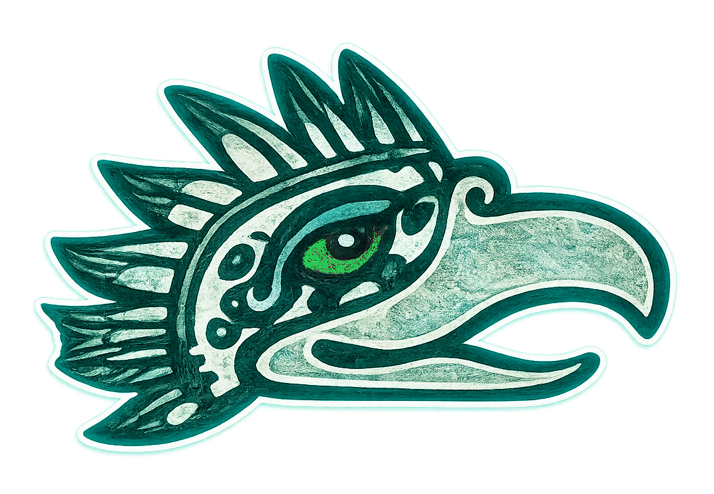

NÁHUATL PATRIMONIAL
tokauiltemyouan — Conjugaciones
Apartados 15a–15o del documento.
TONALKIZAYAN UAN TONALKALAKIYAN
Salida del Sol y Entrada del Sol

15a. panoyotl — Presente
• nipano = paso
• tipano = pasas
• pano = pasa
• tipanoh = pasamos
• anpanoh = pasan
• panoh = pasan
15b. opanokyotl — Pasado / Pretérito
• onipanok = pasé
• otipanok = pasaste
• opanok = pasó
• otipanokek = pasamos
• oanpanokek = pasaron
• opanokek = pasaron
Obsérvese:
• Prefijo de pasado: o-
• Semipronombres: ni-, ti-, Ø-, ti-, an-, Ø-
• Raíz: pano-
• Terminación del pretérito: -k / -kek
15c. panozyotl — Futuro / Subjuntivo (AÚN NO HA PASADO)
• nipanoz = pasaré / pase
• tipanoz = pasarás / pases
• panoz = pasará / pase
• tipanozkeh = pasaremos
• anpanozkeh = pasarán / pasen
• panozkeh = pasarán / pasen
Obsérvese:
• El sufijo -z / -zkeh expresa lo que aún no se
realiza.
• El tiempo futuro y el subjuntivo son equivalentes
porque ambos refieren a lo que todavía no
sucede.
• Dualidad "pasarán / pasen".
15d. panoyayotl — Copretérito / Pasado imperfecto
• nipanoya = pasaba
• tipanoya = pasabas
• panoya = pasaba
• tipanoyakeh = pasábamos
• anpanoyakeh = pasaban
• panoyakeh = pasaban
Observérvese: -ya / -yakeh = Indica continuidad en el pasado.
15e. panozyayotl — Pospretérito / Condicional
• nipanozya = pasaría
• tipanozya = pasarías
• panozya = pasaría
• tipanozyakeh = pasaríamos
• anpanozyakeh = pasarían
• panozyakeh = pasarían
Obsérvese: El sufijo -zya / -zyakeh queda asentado como
marca.
• Expresa lo que pasaría en un escenario hipotético, o
un estado proyectado en pasado.
• Acción que pasaría bajo cierta condición.
• Hipótesis dependiente de otra cláusula.
• Escenario no realizado pero posible dentro del marco
narrativo.
15f. panotiyotl — Obligativo / Mandatorio
• nipanoti = debo pasar / tengo que pasar
• tipanoti = debes pasar / tienes que pasar
• panoti = debe pasar / tiene que pasar
• tipanotikeh = debemos pasar / tenemos que pasar
• anpanotikeh = deben pasar / tienen que pasar
• panotikeh = deben pasar / tienen que pasar
Obsérvese:
• El sufijo -ti / -tikeh indica obligación.
• Se mantiene: -keh pluraliza.
• Ø- es la marca de tercera persona.
• No se incorporan interpretaciones externas
(imperativos, deónticos, modales europeos).
• Este tiempo tiene su propia identidad dentro de este
análisis gramatical.
15g. panokoyotl — Acción cumplida
• nipanoko = llegó a pasar / tuve que pasar
• tipanoko = llegaste a pasar / tuviste que pasar
• panoko = llegó a pasar / tuvo que pasar
• tipanokokeh = llegamos a pasar / tuvimos que pasar
• anpanokokeh = llegaron a pasar / tuvieron que pasar
• panokokeh = llegaron a pasar / tuvieron que pasar
Obsérvese:
• Este tiempo expresa que la acción: ya ocurrió, tuvo
que realizarse, o se alcanzó a completar.
• -ko / koteh expresa cumplimiento = evento
completado.
15h. panotoyotl — Desplazamiento intencional
• nipanoto = fuí a pasar
• tipanoto = fuiste a pasar
• panoto = fue a pasar
• tipanotokeh = fuimos a pasar
• anpanotokeh = fueron a pasar
• panototeh = fueron a pasar
Obsérvese:
• Este tiempo expresa que la acción implica
movimiento hacia un lugar con un propósito,
equivalente a:
• "ir a…"
• "fui a…"
• "fueron a…"
• -to / -tokeh / -toteh como marcadores directos de
movimiento con intención.
15i. panokiyotl — Direccional prospectivo
• nipanoki = vendré a pasar
• tipanoki = vendrás a pasar
• panoki = vendrá a pasar
• tipanokikeh = vendremos a pasar
• anpanokikeh = vinieron a pasar
• panokiteh = vinieron a pasar
Obsérvese:
• Movimiento hacia un lugar,
• pero proyectado hacia el futuro,
• en el modelo abarca un matiz donde la acción
"vendrá a ocurrir".
15j. panotikayotl — Progresivo (acción que está en desarrollo)
• nipanotika = estoy pasando
• tipanotika = estás pasando
• panotika = está pasando
• tipanotikakeh = estamos pasando
• anpanotikakeh = están pasando
• panotikateh = están pasando
Obsérvese:
• El sufijo -tika queda como marcador de progresivo.
• El plural se señala con -tikakeh / -tikateh.
• Se integra al manual como la forma verbal que indica
acción en desarrollo real.
15k. panoyauyotl — Movimiento contínuo
• nipanoyaui = voy pasando
• tipanoyaui = vas pasando
• panoyaui = va pasando
• tipanoyauikeh = vamos pasando
• anpanoyauikeh = van pasando
• panoyauiteh = van pasando
Obsérvese:
• Este tiempo expresa una acción: movimiento,
desplazamiento, continuo, dirección activa y
sostenida.
• Los marcadores de "movimiento continuo" son:
-yaui (singular) -yauikeh / -yauiteh (plural)
15l. xi / xon / xokon yotl — Imperativo
• xi panoa! = ¡Pasa!
• xon panoa! = ¡Pasa por favor!
• xokon panoa! = ¡Pasa por favor!
• xi panoakeh! = ¡Pasen!
• xon panoakeh! = ¡Pasen por favor!
• xokon panoakeh! = ¡Pasen por favor!
Este apartado define el sistema para ordenar, solicitar, invitar
o pedir, según diferentes matices. Estas partículas se aplican
exclusivamente a segundas personas (singular o plural).
• xi-: mandato directo.
• xon-: mandato cortés o suave.
• xokon-: petición más marcada, reforzada o con
énfasis emocional.
Estas formas conservan su función pragmática propia.
15m. matlahtok — Exhortativo / Desiderativo
• ma + nipano
• ma + tipano
• ma + pano
• ma + tipanokeh
• ma + anpanokeh
• ma + panokeh
Este patrón expresa: Deseo, intención compartida o
propuesta.
• "ojalá pase",
• "que suceda…"
En el análisis, el exhortativo se construye con:
• ma (partícula exhortativa/desiderativa)
• pano (raíz verbal)
• keh / teh (terminación verbal)
15n. katok tlamik — Resultativo establecido
• ye + onipanok = ya pasé
• ye + otipanok = ya pasaste
• ye + opanok = ya pasó
• ye + otipanokeh = ya pasamos
• ye + oanpanokeh = ya pasaron (ustedes)
• ye + opanokeh = ya pasaron (ellos-as-)
15o. ontok — Enfatizante
• nionpano = repaso
• tionpano = repasas
• onpano = repasa
• tionpanokeh = repasamos
• anpanokeh = repasaron (ustedes)
• onpanokeh = repasaron (ellos-as-)